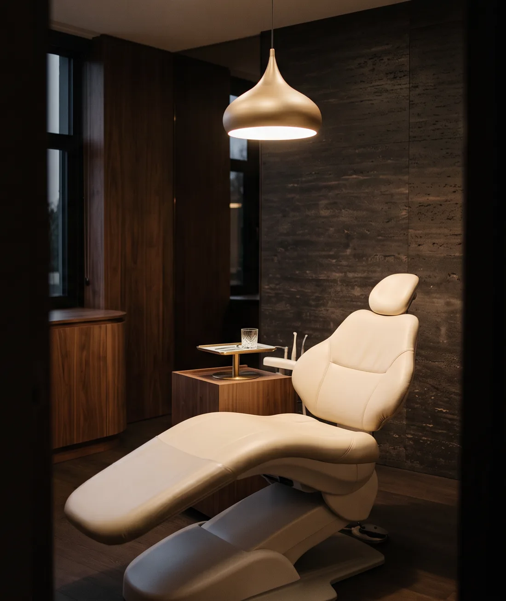
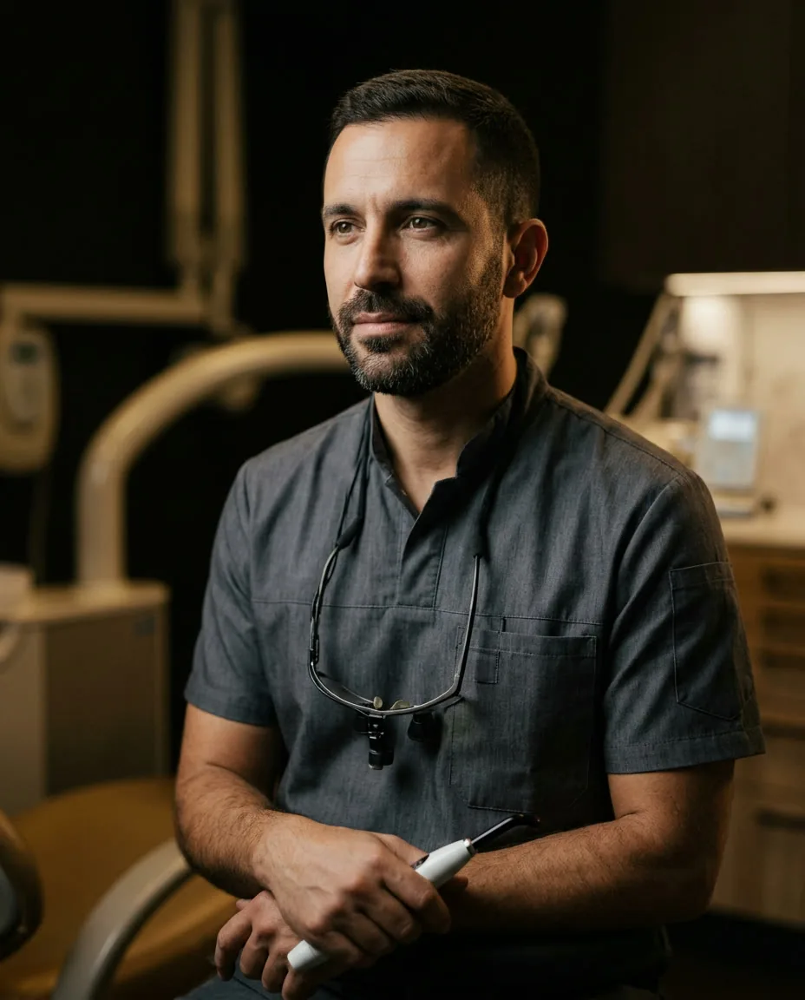
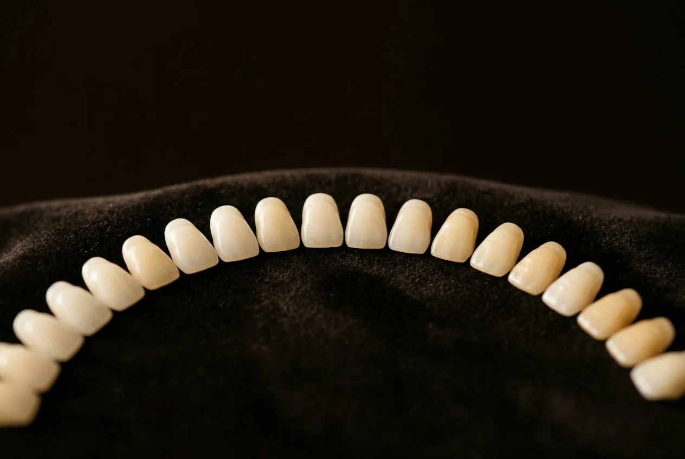

Medicina dentária
com tempo
e precisão.
Planeamos cada tratamento em 3D antes de tocar num único dente. O médico que o recebe na primeira consulta acompanha-o até ao fim.
Antes de tocar num dente, vê o resultado.
Scan intraoral, fotografias e simulação no ecrã. Decide com o plano à frente, não com promessas.
Planeamento digital 3D
Vê a simulação do resultado antes de decidir.
Um médico do início ao fim
Sem passagens de mão em mão entre consultas.
Laboratório de cerâmica próprio
Coroas e facetas feitas e afinadas no mesmo piso.
Uma clínica pensada como um atelier.
No quarto andar de um edifício de 1920 na Avenida da Liberdade, recebemos poucos pacientes por dia. Isso dá-nos tempo para ouvir, explicar cada opção com o seu plano à frente e trabalhar sem pressa.
Não há salas de espera cheias nem consultas de dez minutos. Há uma equipa pequena, um laboratório no mesmo piso e a disciplina de só propor o tratamento de que precisa.
Conhecer a clínica
Seis áreas, um só plano de tratamento.
Cada caso começa pela mesma consulta de avaliação. A partir daí, os especialistas certos trabalham sobre o mesmo modelo digital da sua boca.
Ver todos os serviçosImplantes dentários
Raízes em titânio que devolvem um dente fixo, com coroa em cerâmica feita no nosso laboratório.
02Ortodontia invisível
Alinhadores transparentes planeados em 3D. Vê o resultado final antes de começar.
03Facetas e estética
Lâminas de cerâmica com poucas décimas de milímetro, desenhadas para o seu rosto.
04Branqueamento
Clareamento supervisionado em consultório e em casa, sem sensibilidade desnecessária.
05Reabilitação oral
Planos completos para quem perdeu vários dentes ou sente que a mordida mudou.
06Odontopediatria
Primeiras consultas calmas, prevenção e acompanhamento do crescimento da boca.

Do primeiro exame ao último ajuste, quatro passos claros.
Consulta de avaliação
Exame clínico, scan intraoral 3D, fotografias e radiografia digital. Cerca de 60 minutos.
Plano e simulação
Mostramos o resultado previsto no ecrã e entregamos o orçamento fechado, por escrito.
Tratamento
Sessões marcadas sempre com o mesmo médico, com anestesia controlada por computador.
Acompanhamento
Revisões incluídas no primeiro ano e higiene oral a cada seis meses.
Quatro especialistas, um único plano.
Dra. Helena Vaz Monteiro
Responsável pelos planos de reabilitação e pela coordenação clínica.

Dr. Tiago Almeida Reis
Planeia cada implante no computador antes de entrar no bloco, para que a cirurgia seja curta e previsível.

Dra. Inês Carvalho Sá
Trabalha com alinhadores invisíveis em adultos e acompanha crianças desde o primeiro dente.
Estética DentáriaDr. Rui Sequeira Lobo
Responsável pela área estética e pelo laboratório de cerâmica.
Notas da clínica.
A rotina da manhã que protege o esmalte
Porque não deve escovar logo a seguir ao café, quanto tempo esperar depois de um sumo de laranja e outros hábitos pequenos que fazem diferença ao fim de anos.
Ler artigo
Alinhadores invisíveis: o que muda no seu dia a dia
Quantas horas por dia, como comer, como limpar. Respostas práticas antes de começar.
Ler artigo
Como escolhemos a cor de uma faceta
Luz, idade, tom de pele: o processo por trás de um sorriso que não parece artificial.
Ler artigo
A primeira conversa é sem compromisso.
Sessenta minutos com o médico que o vai acompanhar, exame 3D incluído e um plano escrito para levar para casa. Respondemos no próprio dia útil.